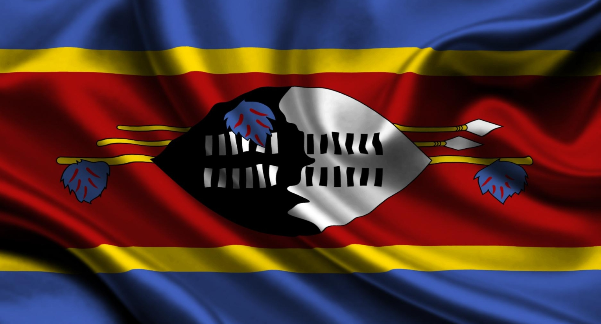

WELCOME TO ESWATINI

Eswatini, formerly known as Swaziland, is a small but vibrant country in Southern Africa, bordered by South Africa and Mozambique. .Cultural Heritage Eswatini is a monarchy with a deep-rooted culture, offering traditional festivals and ceremonies that showcase Swati customs. Natural Beauty. The country boasts diverse landscapes, from mountains and valleys to forests and plains, with wildlife reserves that are home to The Big Five. Adventure and Relaxation: Visitors can engage in hiking, biking, rock climbing, and wildlife safaris, as well as enjoy the natural beauty through activities like zip-wire canopy tours.
SAFARI ADVENTURES:
HLANE ROYAL NATION PARK
Hlane Royal National Park is the largest and most well-known safari destination in Eswatini, offering a truly authentic African wilderness experience. The name “Hlane,” which means “wilderness” in siSwati, reflects its wide open savannah landscapes dotted with scattered trees, making it ideal for spotting wildlife. Once a royal hunting ground of the Swazi king, the park is now protected and home to a variety of animals, including lions, elephants, white rhinos, giraffes, zebras, crocodiles, hippos, and numerous bird species. It is especially famous for its close-up rhino encounters, which can even be experienced on guided walking safaris. Visitors can explore the park through guided game drives available in the morning, afternoon, or at night, as well as on foot with trained guides for a more immersive experience, while some areas are open for self-driving although lion zones remain restricted for safety. Accommodation within the park includes Ndlovu Camp and Bhubesi Camp, both of which overlook waterholes where animals frequently gather, providing excellent viewing opportunities right from your stay. The best time to visit is during the dry season from May to September, when wildlife is easier to spot as animals concentrate around limited water source.